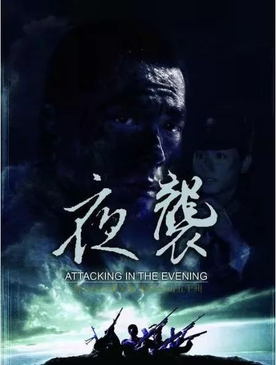
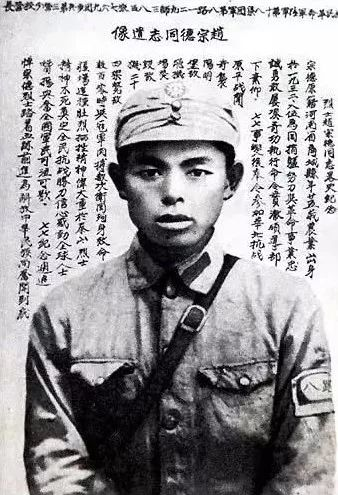
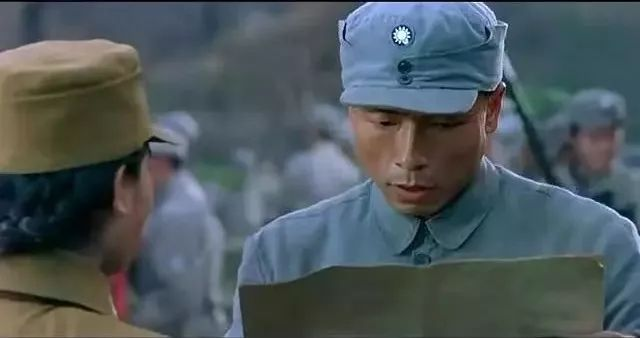
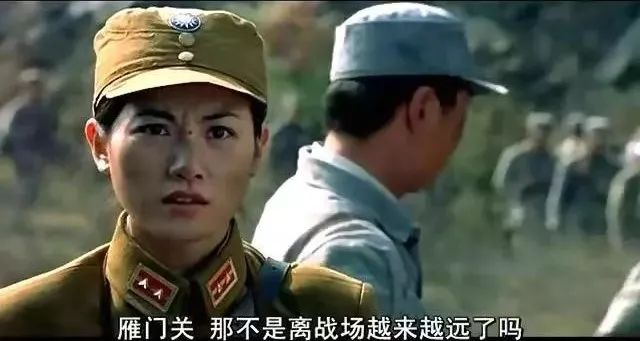
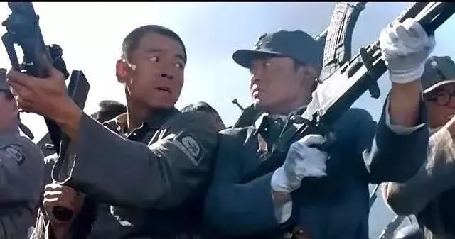
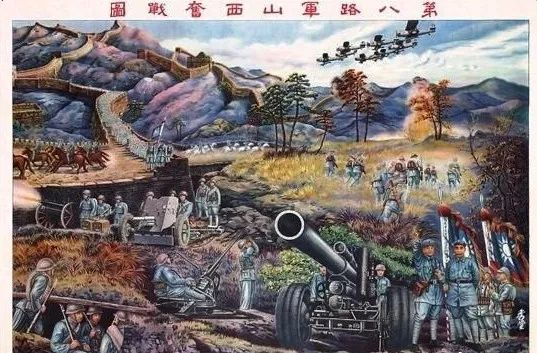
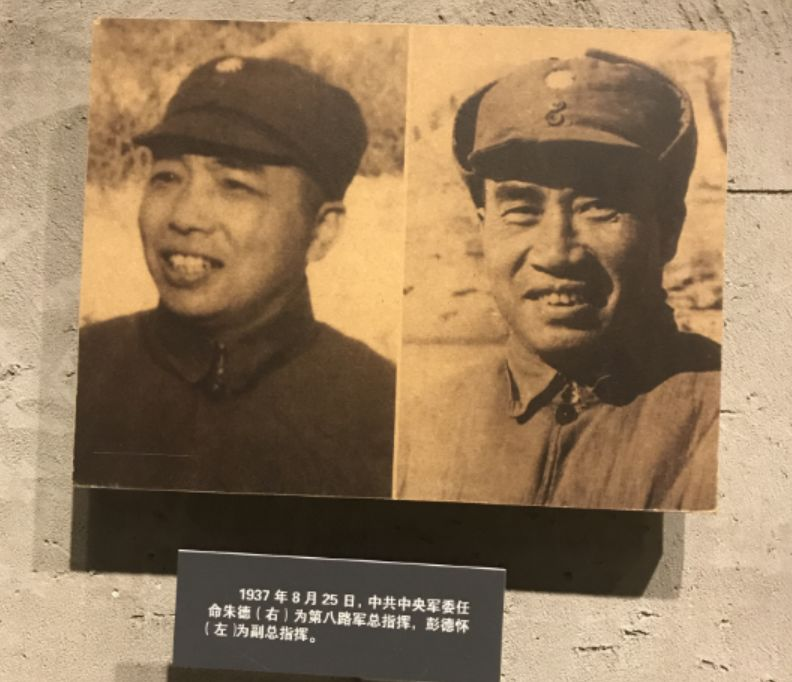
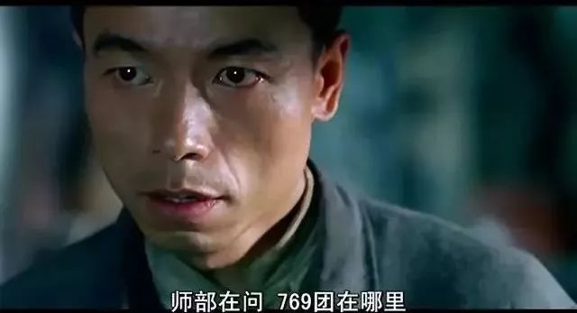
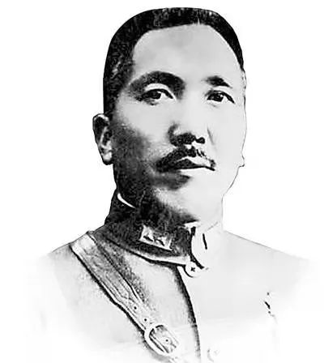

《夜袭》：主旋律题材的转型微光
鲁舒天
在“抗日神剧”荼毒视听的当下，对描述同一历史时期的优质影视作品的打捞，在以往是件为人忽略的命题。
批判自然是有批判的价值，但只知道什么是“坏的”，并不会直接使得“好的”浮出水面。“去伪存真”其实是两件工作，不能想当然地混为一谈。稍作敷衍，标准便要混淆，矛头便要误伤，民智便要迟开。
2007年由八一电影制片厂联合央视电影频道、山西电影制片厂拍摄的电影《夜袭》是众多抗日题材中极为特殊的一部。作为中国人民解放军建军80周年的献礼片，由安澜执导的《夜袭》虽是正经八百的“主旋律”之作，却未在同类型题材的短板上做过多停留，转型与突破的锐意反倒时隐时现。
1
《夜袭》的另一个名字叫《战地潜龙》，故事取材于民国二十六年（1937）忻口会战中的“阳明堡大捷”，王挺在片中饰演国民革命军第十八集团军129师385旅769团团长陈锡联，刘天佐饰演的是在那场夜袭战中牺牲的三营营长赵崇德。
▲战斗英雄赵崇德
陈锡联的769团是全面抗战初期的“四大名团”中唯一一支属于我党（八路军）领导的部队，剩下三支分别是“卢沟桥事变”时奋起反击的陆军第29军37师219团（西北军、团长是吉星文，吉鸿昌之侄，1958年炮击金门时阵亡）、南口战役中“誓死不退”的陆军第13军89师529团（中央军，团长是罗芳珪，徐州会战中阵亡）、淞沪会战末期坚守四行仓库的陆军第72军88师524团（中央军德械师，团长是谢晋元，民国三十年被汉奸刺杀）。
装备最差的769团之所以名列“四大名团”之中，是因为他们在忻口会战最艰难的时刻炸掉了日军停留在阳明堡机场的24架飞机。此举既有利地支援了空中力量贫弱的山西正面战场的战事，又巩固了“兄弟阋墙而外御其侮”的国共两党联合抗日的统一战线。
▲王挺饰演的陈锡联
2
这部电影之所以值得关注，主要原因在于创作者对待历史的态度是相对客观的。
《夜袭》作为一部“主旋律”电影，它当然要承载一部分政治宣传的职能，但相较于以往那些习惯于“夸张”、“虚构”的同类项，这部电影明显更脚踏实地、更尊重观众。它既没有丑化、矮化侵略者，也没有挖苦、编排友军，不仅史实细节丰满，对戏剧冲突的勾勒也颇具要领。
开头抢夺车皮的那场戏，体现的便是刚刚开赴第二战区的第十八集团军同山西本地武装晋绥军的矛盾冲突，它同时也表现了“十年内战”背后对立已久的国共政党之间的绵长积怨。
一腔山西口音的晋绥军中校要强占二战区调给769团的专列，他说自己是南下忻口的主力部队，赵崇德跟他吵了起来，强调自己北上也是去打鬼子。互相信不过的两拨人吵到最后就打成一团，这时候赵崇德又赶紧劝自己人别打了，鼻子上也挨了拳头，直到团长陈锡联与晋绥军团长一齐赶到，才中止了这场殴斗。
这场戏好就好在“不虚伪”，它惟妙惟肖地刻画出昔日仇敌间那种拧巴和纠结的状态，同众多立场先行的抗战题材那种“敌我不分”的演绎对比，《夜袭》的尺度拿捏得已经难能可贵。饶有意味的是，两军刚刚在深明大义的长官意见中和解，日本人的飞机就例行低空扫射，八路军、晋绥军统统死伤一片，“敌我矛盾”彻底打醒了还在“内部矛盾”中纠缠不清的两拨人。
3
众所周知，八路军（创立一个月后番号更名为第十八集团军）隶属国军（国民革命军，非国民党军）战斗序列，这支部队最初的枪械、服装、给养、饷银都是由国民政府军事委员会提供的，并佩戴统一的青天白日帽徽，高级军官亦被授予正式军衔。
我的意见是，如果一部抗日剧里八路军的头上是没有帽徽的，它基本是不必看的，至少不必当作历史正剧去看。凡是对历史有敬畏之心的创作者，都不会忽略乃至抹杀这一细节，它并非体现着什么“政治正确”，反倒恰恰印证出了谁身上还保有一份落后于时代口径的狭隘与迂腐。
▲第八路军山西奋战图
以前的影视作品不过多体现这些，是因为年代的客观原因，算是“不允许”；而今天的影视作品没有体现出这些，则是因为主创本身才疏学浅，简称“不知道”。
当然，前者在某种程度上批量造就了后者，但这个过程不是必然的。要怪，只能怪后人自己太懒惰、对知识太缺乏求证精神。
而《夜袭》中的八路军，确凿是有帽徽的。要说尺度与红线，八一电影制片厂自然最清楚，但人家就是这么拍的。正所谓“内行一出手，便知有没有”，这里面的弯弯绕，外行人永远搞不清，艺术、历史、政治的结合，对那些“抗日神剧”的生产者而言实在过于复杂。
▲十八集团军的正副总指挥
5
“中央军”所扮演的角色同样值得考量。
一处是电影女主角的设计，一位挂着中尉军衔的《中央日报》随军记者跟随着769团北上开拔。她的性别优势无形中消解了阶级对抗的宿怨，镜头中的中立视角更能表现八路军队伍的素质与理念，女记者在电影中无疑是一个巧妙的点。
另一处则堪称《夜袭》的点睛之笔，769团的电台修好后，参谋长向陈锡联等人汇报了129师师部发来的电报——“16日凌晨两点，日军派出几十架次飞机对我阵地轮番轰炸，战斗异常激烈，我军伤亡惨重，第9军军长郝梦龄中将以下已有四位将军殉国。”
副团长在一旁念道：“打得这么惨！”
参谋长补充了一句：“师部在问，769团在哪里？陈锡联在干什么？”
“对我阵地、我军伤亡惨重、已有四位将军殉国”，当参谋长在念这段内容的时候，陈锡联等第十八集团军指战员们所流露出的身体语言，是真正的卫国军人该体现的神情，那里面是对敌人的愤怒与对友军的惋惜，而不是党同伐异的政客们的幸灾乐祸。
▲忻口会战中杀身成仁的郝梦龄
这是《夜袭》中最具进步性的一处桥段，它配得上如今这个时代对于历史的挖掘与正视。